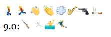

There are many requests for variants of Unicode emoji. This document provides a concrete proposal for a mechanism that could be used for such customization, using the Unicode TAG characters. This approach allows the creation of variant emoji images without waiting for them to be encoded, and has been designed to be extensible.
The basic idea is like that of skin tone modifiers. A given emoji can have a list of TAG characters after it that indicate a particular customization: the whole sequence is called an “emoji tag sequence”. The emoji tag sequence behaves as a single emoji character in display, line break, and in combination with additional skin tone emoji modifiers and in ZWJ sequences.
The Unicode emoji customization mechanism is used to request an alternate rendering of a particular emoji character. It is only used where the base emoji character is in some way generic, and the customization would be considered a variant of that base character. For example, it could be used to indicate that the MAN emoji should be shown with red hair, but not that the MAN emoji be shown as a cup of tea.
Only those emoji tag sequences that follow the specifications in this document are valid. Like the emoji sequences for different family groups (aka emoji zwj sequences[b]), Unicode would catalog those sequences that are supported by major vendors, but would not recommend particular combinations.
The first specified customizations include flags, gender, hair color, and direction. The hair color, gender, direction, and emoji-modifiers could be applied to the same emoji, resulting in a combinatorial explosion of possible glyphs in fonts. The flag customizations also allow for a very large number of possible glyphs. Due to memory constraints, it is thus anticipated that only certain combinations would be supported by major vendors. There is no requirement or expectation that all of the possible combinations — or even any large subset of them — be supported by vendors, until there is technology in the fonts to deal with the combinatorics.
Where the emoji tag sequence is not supported by an implementation, the tag characters are invisible and occupy no space. If the implementation is aware of the tag mechanism, but does not support a particular sequence, then the fallback character should be displayed with a question mark superimposed, such as the following:
That way, the recipient is notified that there is something odd about the character; that it isn’t exactly what the sender intended. The above appearance is not normative: the goal is have a superimposed question mark, but there could be alternate appearances so that the base character is less obscured.
Flags. These customizations allow for additional emoji characters for images of a flag associated with particular regions, such as emoji depictions of the flag of Scotland or California. They are limited to Unicode subdivisions (which generally correspond to ISO 3166-2 subdivisions), and valid 3-digit UN codes. Like the Regional_Indicator characters, they do not represent a specific image. One way to think of them is that they represent “a flag” for a region, not “the flag” for a region.
This mechanism cannot be used for arbitrary flags. It cannot, for example, be used for a rainbow flag, the flag of a particular football club, or a pirate flag. (Side note, see The Worst-Designed Thing You've Never Noticed.)
Gender. Unicode itself doesn’t normally specify the gender for emoji characters: the emoji character is RUNNER, not MAN RUNNING; POLICE OFFICER not POLICEMAN. For a greater sense of realism, however, vendors typically have picked a particular gender to display, even for the neutral characters. The Gender customization allow vendors to display male, female, and neutral versions. Neutral doesn’t mean the default (untagged) presentation, which could be any of these three; it means a specifically a gender-neutral presentation. These customizations are to mark appearance, and not gender identification.
The following is a draft list of emoji characters that would allow customizations of gender:
Committee Note: We will delete from the above list: Snowmen, Princess, Dancer, Father Christmas, Bride, Bunny Ears, Baby, Angel Baby
This includes characters that have explicit gender in their names, where there is corresponding character of the other gender (MAN vs WOMAN), or where the character was encoded for compatibility with the original Japanese emoji or some other source, such as MAN WITH TURBAN.
Review Note: For the 9.0 sports figures, we could drop those where we have consensus to only show neutral images. We need to look at whether JUGGLING might be a person, also.
Hair Color. There are hundreds of possible distinctions among hair color, but because emoji are presented with a “cartoon” style it suffices to have just a few broad choices. The tag-values are also deliberately limited to avoid font-size problems. The supported list is taken from the US Online Passport form (BLACK, BLONDE, BROWN, RED, GRAY), with the addition of Bald (no hair). This also matches the UN Grounds Pass application, and is similar to hair color options on other forms, such as driver’s licences.
The following is a draft list of emoji characters that would allow customizations of hair color:
Committee Note: We will delete from the above list: Blond Man, Bath, and Bikers
Direction. Some characters typically presented with a direction that may be semantically significant in sequences of emoji, in that they would point in the direction of an action. Unfortunately, for historical reasons the “default” direction is fairly arbitrary; you see some emoji pointing left 🎥 and others pointing right 📽.
So, for example, when someone is commenting on a crime movie, for “the detective shot the policeman” it would be more natural to see:
......
Rather than to see the following, could be taken as the detective committing suicide, or the policeman shooting the detective:
......
The emoji tag sequences allow for both directions to be expressed and interchanged. The following is a draft list of emoji characters that would allow customizations of direction:

Committee Note: We will add the following characters:
Note: There are many possible characters that could usefully have direction applied to them. However, we should start out with just small number of base characters, and expand as necessary.
A major difference for the Direction customization is that the images simply need to be mirrored, thus making essentially no difference in the size of the font (if the technology permits).
Private Use. There are also private-use tag sequences, which allow for experimentation and interchange in closed systems, but which are not suitable for general interchange.
The following is a technical description of how the tag sequences would work.
Note: one by-product of the direction of this work is that the Emoji SC and UTC should focus primarily on “generic” emoji characters, rather than very specific versions.
The customization syntax uses the 95 invisible TAG characters:
U+E0020..U+E007F (TAG SPACE..CANCEL TAG).
These correspond to ASCII characters, and may be referenced by an abbreviated name of the form Tag-<single-ascii-character>, such as Tag-U for U+E0055 TAG LATIN CAPITAL LETTER U. In examples, where clear, they can also be represented simply by the corresponding ASCII letters. The tag-term can be represented by ✦. The regex characters ?, *, + have their normal meaning.
In addition, there are the following special terms:
Notation |
Characters |
Description |
tag-base |
[:emoji=yes:] |
any single emoji character (w/o Regional_Indicators) |
tag-term |
U+E007F CANCEL TAG |
terminating Tag (see Review Note). |
tag-keyChar |
Tag-A..Tag-Z |
Tag characters corresponding to uppercase letters: [A-Z] |
tag-valChar |
U+E0020..U+E0040, U+E005B..U+E007E |
Tag characters that are neither tag-term nor tag-keyChar. |
ED-10a. emoji tag sequence
A sequence consisting of an emoji character followed by one or more non-terminating TAG characters, followed by a terminating TAG character.
emoji-tag-sequence := tag-base-item tag-key-value-pair+ tag-term
tag-base-item := tag-base | tag-base_variation_sequence
tag-key-value-pair := tag-key tag-value
tag-key := tag-keyChar+
tag-value := tag-valueChar+
Add new definition in UTR51:
10b. A tag-base-variation-sequence is an emoji variation sequence that starts with a tag-base.
Add emoji-tag-sequence to the following definitions in UTR51:
ED-13. emoji modifier sequence, and
ED-15. emoji core sequence.
Further Constraints:
Thus—in ASCII terms—each key is a tag sequence that consist of one or A..Z characters. So “A” is a key, as is “AB” or “ZZ”. The value is any sequence of one or more characters from <space> to “~”, outside of A-Z. For example, a tag-key-value-pair could be “Fusca”, representing the key= “F” and value = “usca”. The interpretation of each tag-key-value-pair depends on the tag-base, tag-key, and tag-value.
Example: <tag-base>ABxAy<tag-term> is invalid, as is <tag-base>AxAy<tag-term>.
Review Note: the length (currently 16) is up for discussion, but everyone is agreed that we need a fixed limit.
Review Note: the committee considered whether to have the tag-term or not. For font lookup, people didn’t want to have to backup when a non-TAG character is seen. To mark the end, it would be sufficient to forbid sequences that are prefixes of other valid sequences. The easiest way to ensure that is to always have a terminator. In some cases, it may not be necessary, but it makes validity checking much easier.
This defines the well-formed emoji tag sequences. However, the only currently valid sequences are those defined in the following sections. All others are reserved for future use. Only certain tag-keys are valid for a given tag-base, and only certain tag-values are valid for the given tag-key. The tag-value may also have internal syntax.
An emoji modifier that affects the customized emoji should follow the complete sequence representing the customized emoji, and in a sequence such as <Char ZWJ Char TAG+> the TAG sequence applies only to the second character in the sequence.
Tag-Base: U+1F3F3 WAVING WHITE FLAG
Tag-Key: Tag-V
Tag-Value: (Tag-0..Tag-9, Tag-a..Tag-z)+
Further Constraints:
Example: <U+1F3F3>Vgbsct<tag-term> requests a flag for the subdivision “gbsct”, which represents Scotland. Note that there is no hyphen, and it is all lowercase, unlike the format for ISO subdivisions (“GB-SCT”).
Review Note: Tag-Key ‘V’ is mnemonic for Vexillology, but we could change that if we wanted.
The attributes are used to request the display of an emoji character to have a particular attribute. There are currently 3 supported types of attributes:
Tag-Base: Gender_Base | Hair_Base | Direction_Base
Tag-Key: Tag-U
Tag-Value: (Gender_Attribute | Hair_Attribute | Direction_Base)+
The Tag-Base and tag-key-value-pair values are listed below. A Tag-Base character can be in any of the listed classes. Each class has a set of valid attributes. Additional classes and attributes may be added in future versions.
The choice of Tag-Value characters is somewhat arbitrary, since they are not visible to users. However, they are chosen to be mnemonic where possible, since that is useful for internal debugging (more recognizable than Tag-1, Tag-2, etc.).
Review Note: This particular model for U is chosen for compactness, rather than having a model with a distinct tag key for each set of related attributes. For example, one can have Ugmr✦ instead of the slightly longer DrGmHg✦ (where Direction, Gender, and Hair are separate Tag-Keys). However, we’d appreciate feedback on whether the longer format is sufficiently simpler—conceptually—that it is worth using.
Further Constraints:
Additional emoji properties are added to Annex A: Emoji Properties and Data Files in support of these, with a new data file (eg, emoji-attributes.txt) using the standard format, eg:
26F9 ; Emoji_Gender_Base # PERSON WITH BALL
1F3C3 ; Emoji_Gender_Base # RUNNER
1F3C4 ; Emoji_Gender_Base # SURFER
1F3CA ; Emoji_Gender_Base # SWIMMER
1F3CB ; Emoji_Gender_Base # WEIGHT LIFTER
1F46E ; Emoji_Gender_Base # POLICE OFFICER
…
tag-valueChar |
Description |
Tag-m |
Male appearance |
Tag-f |
Female appearance |
Tag-n |
Gender-neutral: neither male nor female appearance |
Examples:
Male Runner: <U+1F3C3>Um<tag-term>
Female Runner: <U+1F3C3>Uf<tag-term>
tag-valueChar |
Description |
Tag-k |
Black-haired |
Tag-s |
Blond(e) [also Sandy-haired] |
Tag-b |
Brown [Brunet(te)] |
Tag-g |
Redhead [Ginger] |
Tag-y |
Gray-haired |
Tag-d |
Bald (no hair) |
Example:
Red-haired Female Runner: <U+1F3C3>Ugm<tag-term>
Note that the characters “gm” must be in sorted order.
tag-valueChar |
Description |
Tag-r |
Point-Right |
Tag-l |
Point-Left |
The Tag directions are to have a mirrored effect in a bidi context. All emoji characters are Bidi_Class=Other_Neutral (except for the enclosed alphanumerics).
Example:
Red-haired Male Runner facing Right: Ugmr<tag-term>
Note that the characters “gmr” must be in sorted order.
Private Use tag sequences are for closed interchange within a given system. As with private use codes in general, the tag sequence may have no meaning or a different meaning outside that system, so it is not suitable for general interchange. Any key starting with Tag-Z qualifies, and any tag-value.
Tag-Base: emoji-character (any)
Tag-Key: Tag-Z tag-keyChar*
Tag-Value tag-valChar+
Implementations should consider the use of any of the thousands of private use Unicode characters instead. However, the advantages of Private Use emoji customizations include:
The hair color, gender, and emoji-modifiers could be mixed, resulting in a combinatorial explosion of glyphs in fonts. It is anticipated that only certain combinations would be supported generally until the technology supports them without a massive size increase. There are a few possible avenues. One is the “Mr(s) Potato Head” approach, whereby glyph pieces are assembled for a particular image. For example, there might be some different color hair styles that would be appropriate for overlaying on a RUNNER emoji. These could then be used to create male and female variants.
A more general approach is to allow override of the color palettes in the images in the font. With this approach, exactly the same image of a girl can be used with many combinations of hair and skin color, for example.
If the rendering engine can mirror images in the font, then the direction can also be supported generally with little size overhead.
Review Note: We considered various other models: